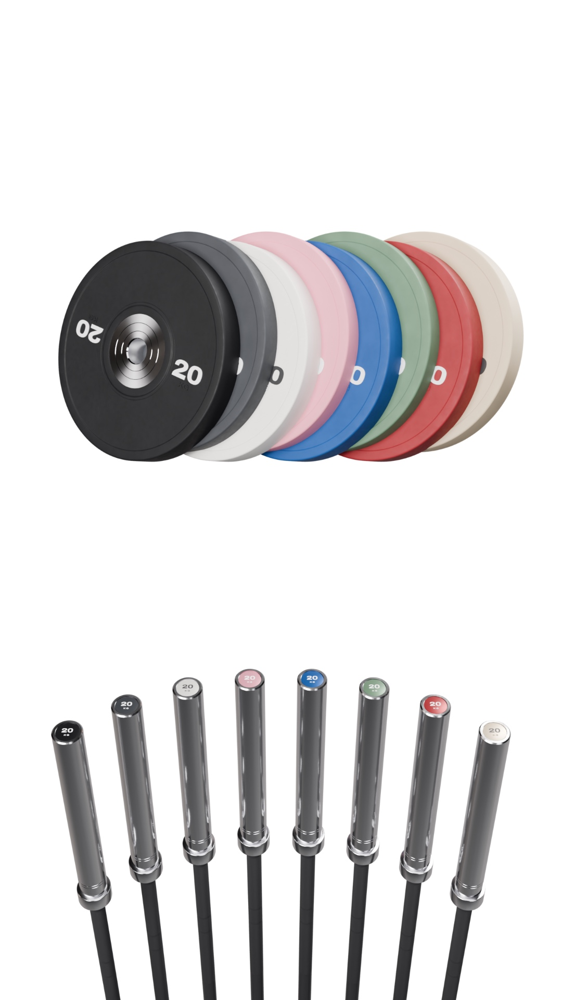
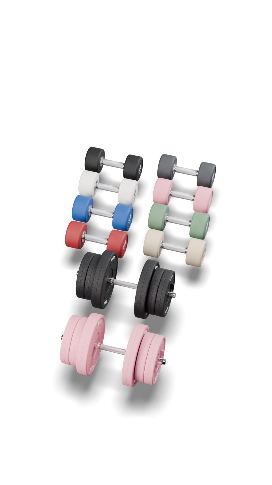
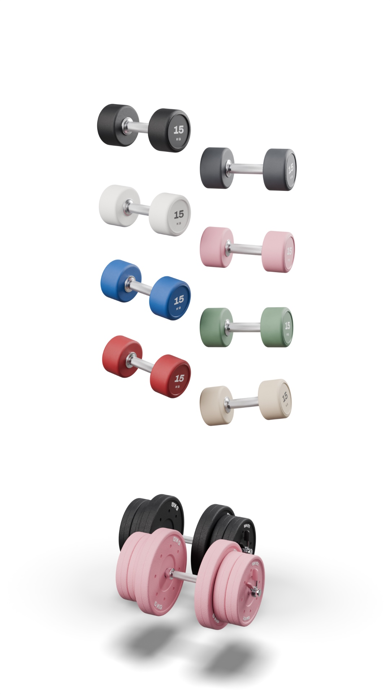
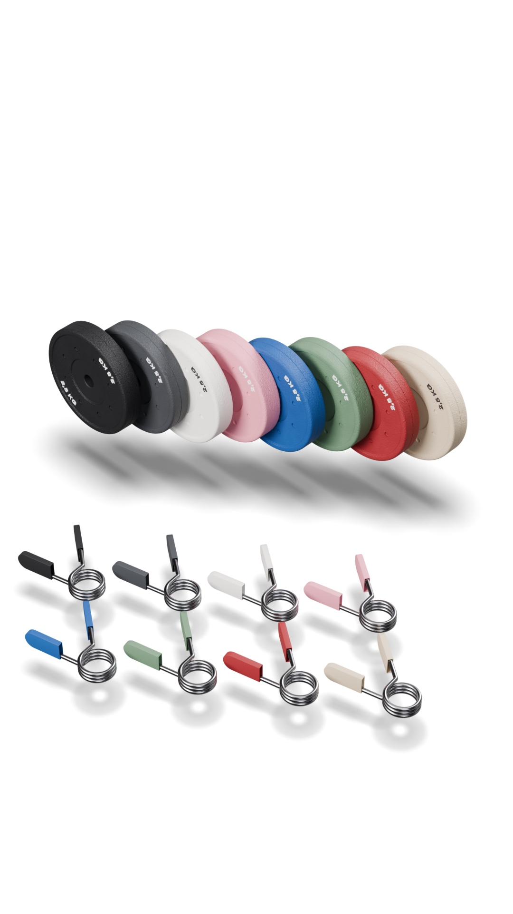
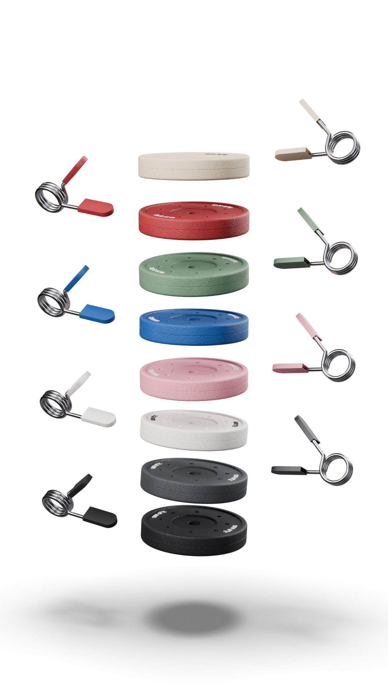

1080 × 1920, fond blanc, sans texte, une ombre légère sous les objets. Une story par groupe : pour 2 et 3, deux mises en page au choix.
Les pointillés montrent les zones que couvre Instagram (profil en haut, réponse en bas) : ils ne sont pas dans les images.




